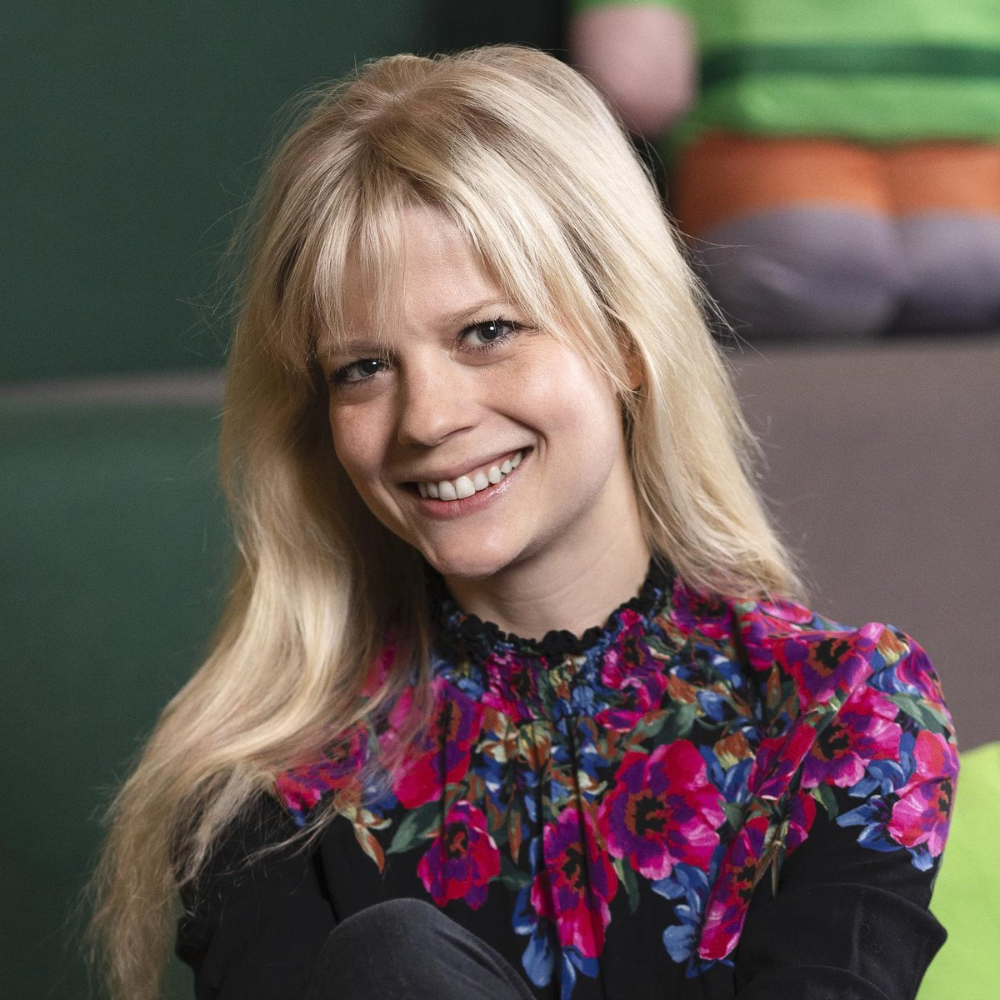

Qui est Agnès Larsson ?
Agnès Larsson est une développeuse suédoise et une figure importante du jeu vidéo. Elle travaille chez Mojang Studios, où elle occupe le poste de Directrice de Minecraft Vanilla.
Depuis plus de dix ans, elle s'intéresse à la manière dont les mondes virtuels peuvent devenir des espaces durables, créatifs et inclusifs, façonnés par les communautés elles-mêmes.
Son rôle dans la conférence TED
Dans sa conférence, Agnès Larsson propose une vision nuancée du concept de « métaverse ». Plutôt que de défendre un monde unique et centralisé, elle met en avant l'existence de multiples métaverses.
Son discours s'appuie sur des exemples concrets issus de Minecraft, montrant comment les joueurs créent, collaborent et inventent leurs propres mondes.
Informations clés
| Nom | Agnès Larsson |
|---|---|
| Profession | Directrice Minecraft Vanilla – Mojang Studios |
| Domaine | Mondes virtuels, développement de jeux, communautés numériques |
| Conférence | The awesome potential of many metaverses |
| Idée principale | Des métaverses multiples, accessibles, inclusifs et centrés sur les utilisateurs. |
Et si, maintenant, on arrêtait d'en parler… pour aller voir à quoi ça ressemble vraiment ?
Explorer l'exemple Minecraft